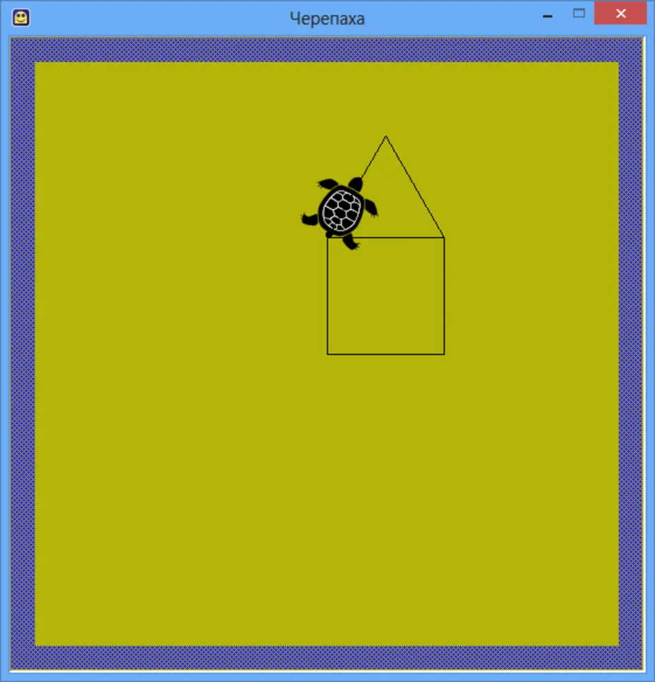
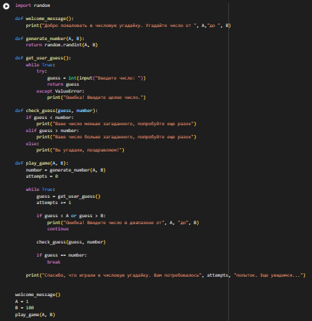

Вот несколько из моих проектов:
Проект "Черепашка"
Программа написанная на C# в Visual Studia. Черепашка выполняет команды рисовать с движением вперед, развороты налево и направо, а также меняет цвет линии.
Проект "Шар 8"

Маленькая программа, написанная на языке Пайтон. Полностью повторяющая "безделушку" Шар 8.
Проект "Угадай число"
Такая же маленькая программа на Пайтон. Игрок вписывает число, а программа говорит - "меньше" или "больше".